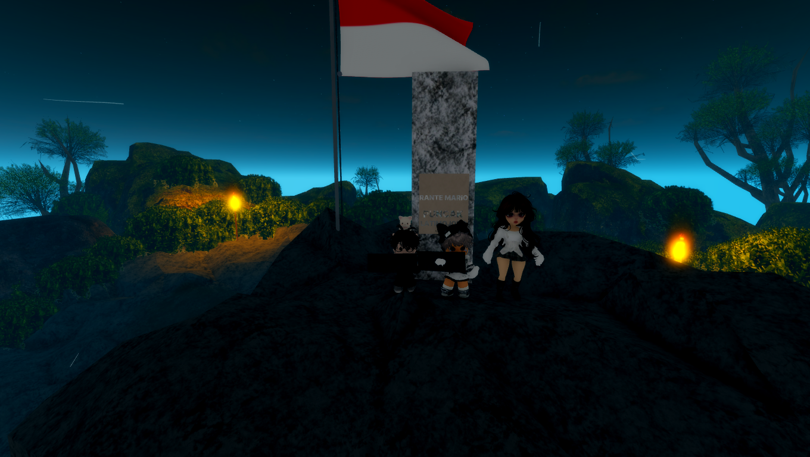
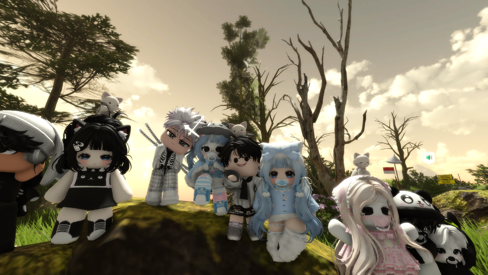
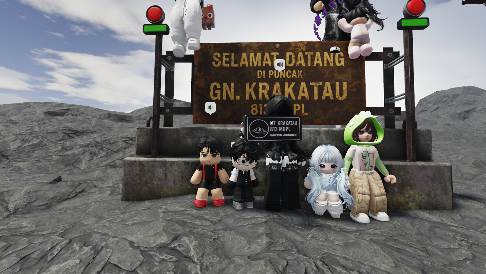
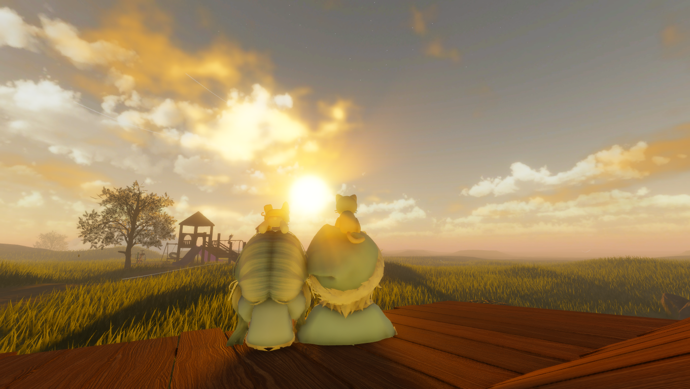
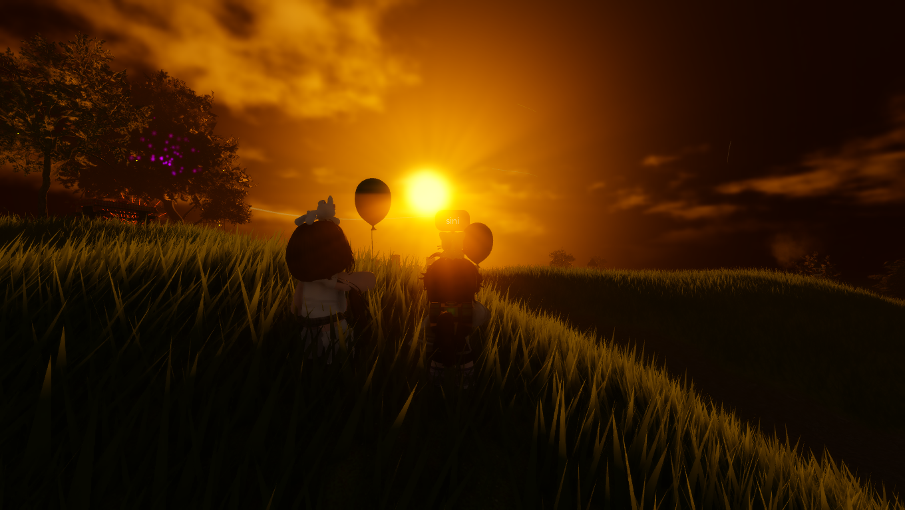
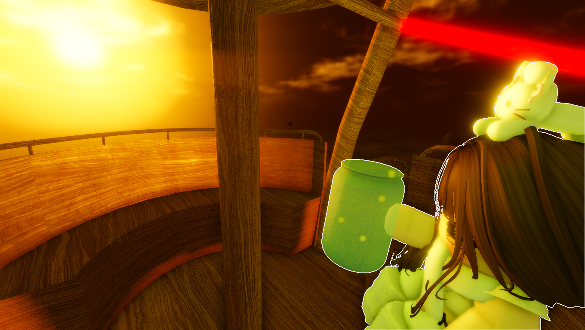
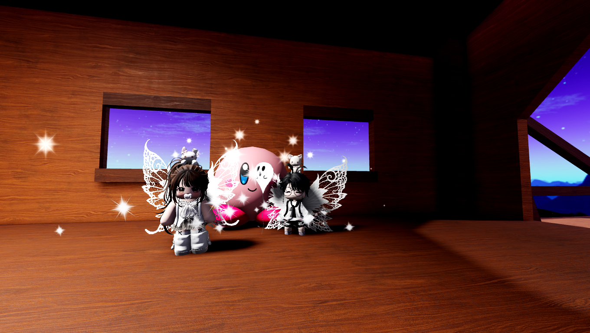
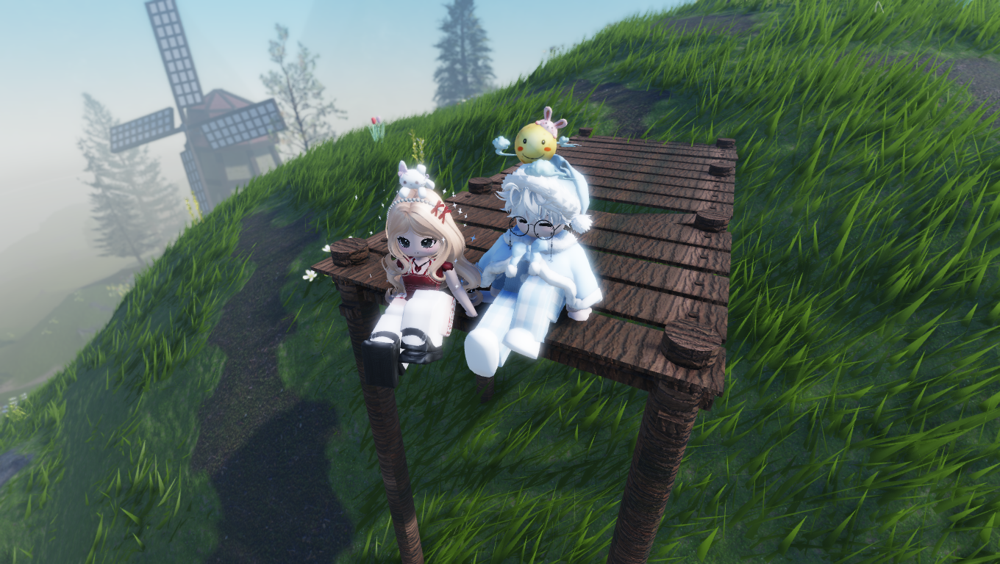
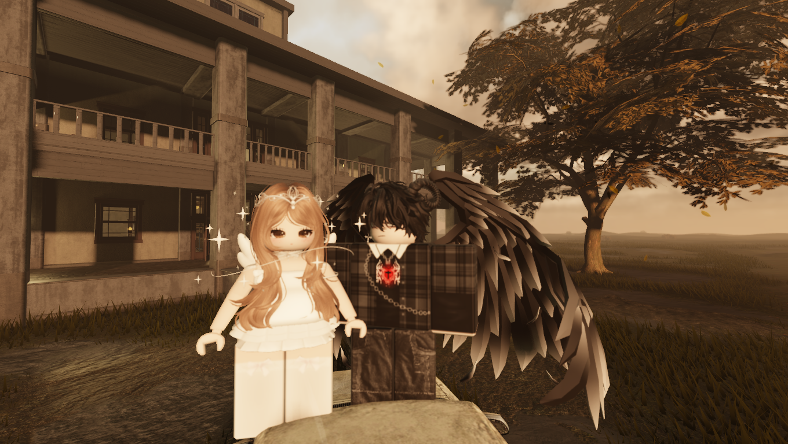
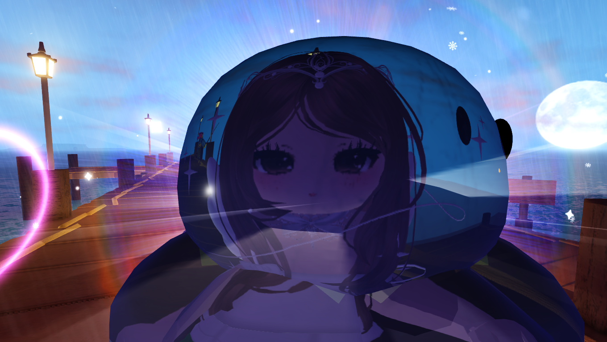

Mau pilih yang mana dulu nih?
Klik salah satu angpao di atas!
❤️ Happy Valentine! ❤️
To the most important person ever...
Don't let anyone else's negative thoughts dim your light (Including me). Keep being the sunshine in my life and in the lives of everyone around you. 🌞
I will stand in your rain and support you through every storm till the rainbow arrives.
So please, raise your head up!
Below this warm lantern...
May this year bring abundant prosperity, as abundant as my love to you 🐊.
Sending you lots of Luck & Love!
Hello, Calon S.Psi.
You're already on the right path. Keep going! 🚀
Here are some pics that I saved
The first time we met
Kamu kenal sama mereka kah?
Baru nyadar ada jee juga
Waktu masih sering ke maps relapse
  Some more mounts
 Terakhir
 